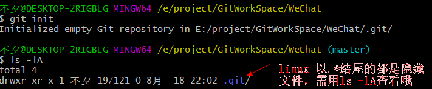

命令行操作之初始化仓库及文件提交
- 本地库初始化
- 命令：git init
- 效果
- 生成.git目录
- .git目录文件


- 注意： .git目录中存放的是本地库相关的子目录及文件，不要删除，也不要随意修改
- 设置签名
- 用户名
- email
- 作用：区分不同开发人员身份(设置的签名和登录远程仓库(代码托管中心)的账号、密码没有任何关系)
- 命令
- 项目级别(仓库级别)：仅仅在当前项目有效
- git config user.name tom_pro
- git config user.email goodMorning_pro@com
- 系统用户级别：在当前的登录的操作系统用户有效
- git config --global user.name tom_glb

- git config --global user.email goodMorning_glb@com

- 注意
- 都设置了的话，优先级就近原则，项目级别>系统级别
- 二者都没有不允许
- 项目级别签名信息保存在.git目录下的config文件

- 系统用户级别签名信息保存在用户Home目录下的.gitconfig文件

- 一般为了省事设置系统级别
- 命令 git status #查看git暂存区的状态
- 默认是master分支

- on branch master #当前分支master
- no commit yet #没有已提交的 [仓库中没有东西]
- 没有要提交的[暂存区中没有东西]（创建或者copy 文件可以使用git add添加到暂存区 ，使用track去跟踪<由git去管理>这个文件
- 基本命令汇总
- git --help #查看命令
- git init #本地库初始化
- #项目级别签名
- git config user.name <username> #用户名
- git config user.email <email> #邮箱
- 系统用户级别签名
- git config --global user.name <username> #用户名
- git config --global user.email <email> #邮箱
- git status #查看git暂存区的状态
- git add <filename> # 将工作区的新建or修改添加到暂存区
- git track # 追踪git文件
- git rm --cached <filename> # 将暂存区中未提交到本地库的文件撤回
- 提交到本地库
- git commit <filename> # 将暂存区的文件提交到本地库 需要进入vim编辑器填写提交信息
- git commit -m " commit message" <filename> #直接-m后填写提交信息
- git commit -a <file> # 直接提交工作区文件到本地库，但暂存区不会保存该次提交版本(且该文件不是新建文件)
- git checkout --<filename>
实例操作：
- 当我们第一次创建项目时，使用git status 去查看仓库

- vim创建 good.txt文件，git status查看仓库状态

- 出现了Untracked files （未追踪的文件），use ‘git add <file> ’将文件添加到暂存区
- git add 添加文件到暂存区

- LF 替换CRLF在good.txt中,安装git时步骤9配置
- 在你的工作空间目录将使用原来的换行符
- git status 再次进行查看

- 要提交的 good.txt 可以使用git rm --cached <file> 撤回
- git rm --cache good.txt ###撤回

- git add good.txt
- 使用git commit 提交good.txt

- 需要输入提交文件的注释
- 输入提交信息后

- [master （root-commit）7ba0997] root-commit 表示第一次提交，就是根提交，7ba0997提交分支的hash值
- 1 file changed, 1 insertion(+) 1个文件改变 ，添加了一行
- git status

- nothing to commit, working tree clean 没有要提交的，工作空间是干净的
- 修改good.txt后 git status 查看

- use ‘git add’ and/or ‘git commit -a’ ## 你可以先使用git add添加到暂存区，在使用git commit -a提交，或者直接使用git commit -a 提交
- git add & git status

- git commit -m " commit message" good.txt


此时没有 root-commit 提示，只有第一次提交才会提示，即第一次为根提交